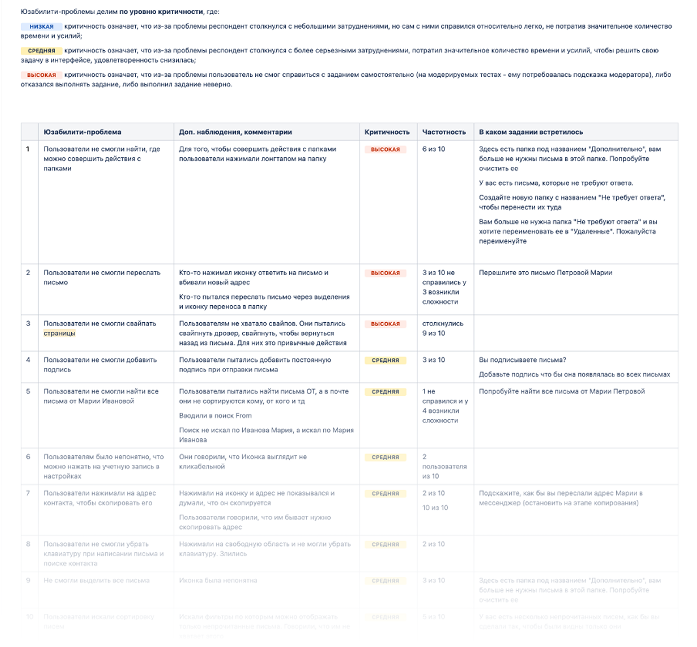

Как исследование пользователей определило развитие мобильной почты
01Проект
Провела исследование мобильного почтового приложения МойОфис и выявила 15 UX-проблем, включая 3 критические.
Результаты исследования помогли команде пересмотреть дальнейшее развитие продукта и легли в основу нового приложения — Мэйлион.
02Контекст
Мобильная почта МойОфис распространялась через B2G-контракты.
У команды практически не было доступа к конечным пользователям, поэтому решения принимались без понимания того, как люди взаимодействуют с продуктом в реальной жизни.
Мы не знали:
- справляются ли пользователи с базовыми сценариями;
- какие проблемы встречают чаще всего;
- насколько интерфейс соответствует ожиданиям аудитории.
Без этих данных дальнейшее развитие продукта превращалось в набор предположений.
03Цель исследования
Получить объективную картину использования приложения и определить направления для развития продукта.
Для этого нужно было:
- проверить ключевые пользовательские сценарии;
- выявить проблемные места интерфейса;
- понять ожидания пользователей;
- собрать рекомендации для продуктовой команды.
04Как я организовала исследование
Исследование состояло из двух этапов.
Приоритизация сценариев
Сначала я провела опрос среди внутренних пользователей компании.
Это помогло определить, какие функции используются чаще всего, где уже возникают сложности и какие сценарии наиболее важны для дальнейшей проверки.
На основе результатов сформировала гипотезы для тестирования.
Юзабилити-тестирование
Провела модерируемые удалённые тесты с 10 внешними респондентами, которые регулярно используют мобильную почту в работе.
Участники выполняли реальные задачи в приложении и комментировали свои действия вслух.
Так удалось увидеть не только ошибки пользователей, но и понять их логику принятия решений.
05Что мы проверяли
Исследование охватывало три ключевые зоны интерфейса.
Работа с папками
- создание папок;
- очистка содержимого;
- управление структурой почты.
Список писем
- поиск писем;
- отметка важных сообщений;
- массовые действия;
- перемещение между папками.
Открытое письмо
- работа с контактами;
- ответы и пересылка;
- копирование информации;
- понимание действий на нижней панели.

06Что удалось узнать
6 из 10 участников пытались использовать долгое нажатие для управления папками. Такой паттерн распространён в других приложениях, поэтому его отсутствие вызывало затруднения.
9 из 10 участников интуитивно пытались использовать жесты для возврата назад и закрытия экранов. Когда жесты не работали, пользователи теряли уверенность в своих действиях.
Участники путали пересылку с ответом, спам с информацией, отметку прочитанного со статусом письма. Это приводило к неверным действиям и дополнительным попыткам.
Половина участников не смогла найти письмо с первой попытки из-за различий между логикой поиска и ожиданиями пользователей.
07Результаты исследования
В ходе работы было выявлено:
- 15 UX-проблем;
- 3 критические проблемы;
- 7 улучшений, вошедших в продуктовый бэклог.
Все результаты были оформлены в виде рекомендаций и презентованы продуктовой команде.
Респондент столкнулся с небольшими затруднениями, но справился сам.
Потребовалось значительное время и усилия, удовлетворённость снизилась.
Не смог справиться сам, потребовалась подсказка модератора или действие было выполнено неверно.

08Влияние на продукт
Исследование стало одним из источников данных для принятия решения о дальнейшем развитии мобильной почты.
Позже команда отказалась от развития существующего приложения и начала разработку нового продукта — Мэйлион, объединившего почту и календарь.
Полученные инсайты легли в основу нового решения и помогли избежать повторения найденных UX-проблем.
Что было важно
Этот проект показал ценность исследований в ситуации, когда у команды практически нет прямого доступа к пользователям.
Даже небольшое исследование позволило заменить предположения реальными данными и дать команде ориентиры для развития продукта.